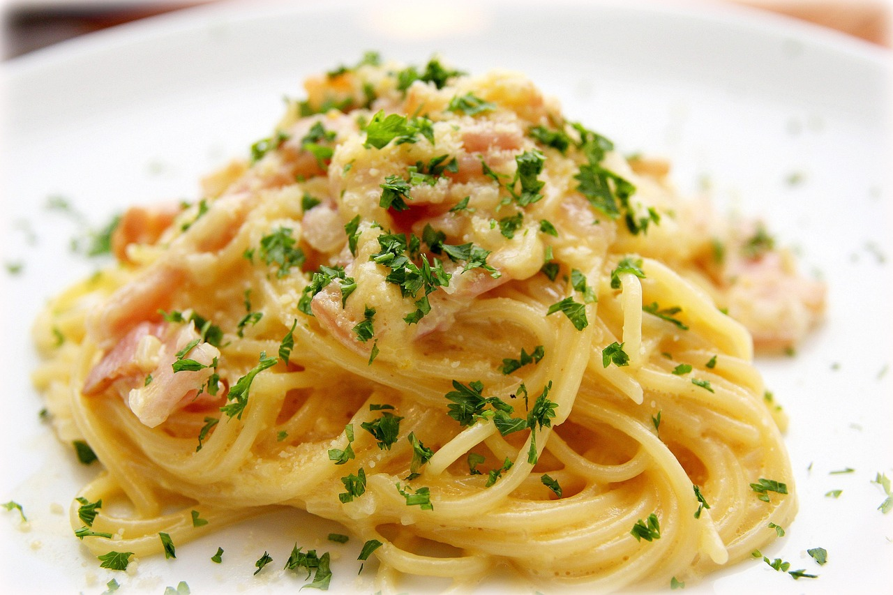

Carbonara Recipe
Back to Home

Image by Wow Phochiangrak from Pixabay
This is a real spaghetti carbonara recipe made the traditional Italian way, without a single drop of cream. It relies solely on egg and cheese to make a luscious, creamy carbonara sauce. Food fit for a king (or queen!) that proves simple can be magnificent.
Ingredients:
- 175g/6 oz guanciale (pancetta or block bacon)
- 2 large eggs
- 2 egg yolks
- 100g/3.5 oz parmigiano reggiano
- 1/4 tsp black pepper
- 400g/14 oz spaghetti
- 1 tbsp cooking/kosher salt
- 1/2 cup pasta cooking water
- 1 garlic clove
Garnish (optional)
- Parsley
- Parmigiano reggiano
Instructions:
- Guanciale – Cut into 0.5cm / 1/5" thick slices then into batons.
- Carbonara sauce – Place eggs and yolks in a large bowl. Whisk to combine. Then stir in the parmesan and pepper.
- Cook pasta – Bring 4 litres (4 quarts) of water to the boil with the salt. Add pasta and cook per the packet directions.
- Reserve pasta water – Just before draining, scoop out 1 cup of pasta cooking water, then drain the pasta.
- Cook guanciale – While the pasta is cooking, place guanciale in a non stick pan over medium high heat. Cook for 4 to 5 minutes until golden. No oil needed – as the guanciale heats up, the fat will melt so it fries in its own fat. If using garlic, add it in the last minute.
- Pasta in pan – Tip the hot pasta into the pan and toss to coat in guanciale fat.
- Mix pasta in sauce – Transfer the pasta and any residual fat in the pan into the bowl with the egg. Add 1/2 cup (125 ml) pasta cooking water. Stir vigorously using the handle of a wooden spoon for 1 minute and watch as the sauce transforms from watery to creamy and clings to the pasta strands!
- Serve – Transfer into warm bowls. Serve immediately, garnished with a little extra parmigiana reggiano if desired, and a pinch of black pepper and finely chopped parsley.